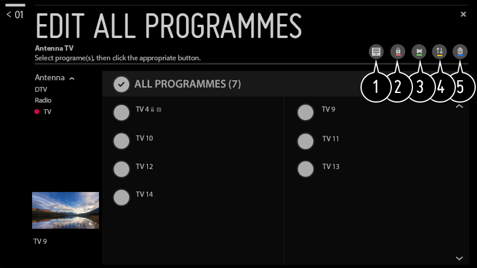
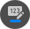
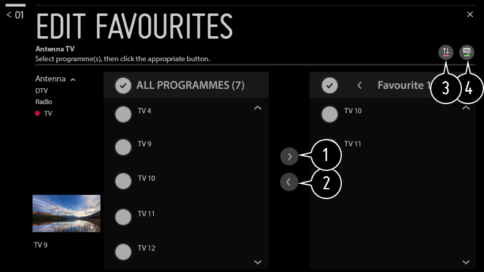

Editar canales
Puede editar los canales seleccionados de todos los canales almacenados o añadirlos a / eliminarlos de los canales favoritos.
Editar la lista de todos los canales

 Canales
Administrador de canales
Editar Todos los Programas
Canales
Administrador de canales
Editar Todos los Programas
Puede bloquear o desbloquear los canales seleccionados de todos los canales almacenados o puede establecer que se omitan al cambiar de canal.

- Establece la opción de ordenación.
- Bloquea los canales seleccionados o desbloquea los canales bloqueados.
- Establece los canales seleccionados para que se omitan al cambiar de canal o desactiva la opción de omisión para los canales que se haya establecido previamente que se omitan.
-
:
Mueve los canales seleccionados.
: Cambia los números de los canales seleccionados. -

:
Cambia los números de los canales seleccionados.
: Elimina los canales seleccionados.
Las funciones disponibles pueden variar en función de la señal de retransmisión.
Para un modelo que sea compatible con los programas de satélite, puede gestionar los canales de satélite en Editar canales de satélite (Avanzado).
Editar la lista de canales favoritos
Canales
Administrador de canales
Editar Favoritos
Puede añadir / eliminar los canales deseados a / de los canales favoritos, cambiar sus posiciones, etc.

- Seleccione los canales deseados de la lista de todos los canales y pulse el botón para añadirlos a la lista de canales favoritos.
- Elimina los canales seleccionados de la lista de canales favoritos.
- Seleccione un canal o más en la lista de canales preferidos, pulse el botón y, a continuación, seleccione la posición a la que desea moverlo. Los canales seleccionados se moverán a la posición que haya escogido.
- Cambia el nombre de la lista de canales favoritos.